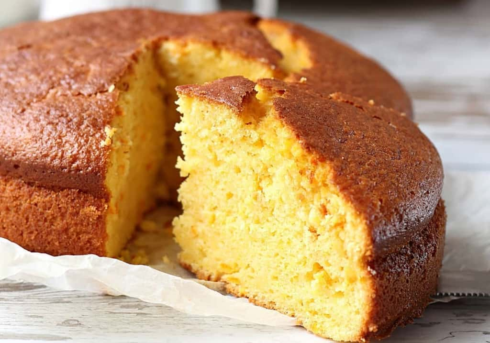

The Odin Recipes
Simple Sponge Cake

Description
This is a simple sponge cake that can be made in no time at all with only three ingredients.
Ingredients
3 eggs
½ cup castor sugar or superfine sugar
⅔ cup self-rising flour
Instructions
Step 1
Preheat the oven to 375 degrees F (190 degrees C). Grease an 8 or 9 inch round cake pan.
Step 2
In a medium bowl, whip together the eggs and castor sugar until fluffy. Fold in flour. Pour into the prepared pan.
Step 3
Bake for 20 minutes in the preheated oven, or until the top of the cake springs back when lightly pressed. Cool in the pan over a wire rack.
Click to go to the original recipe